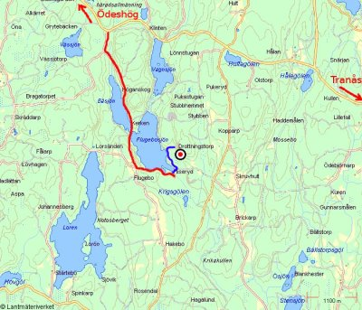

Rödberget (Flugebosjön)
Kategori:Östergötland
Kategori:sva
Kategori:överhäng
Kategori:vertikalt
Kategori:Trad
Kategori:Sport
Lat: 58.095436
Long: 14.797809
[[bild:rodberget.jpg|thumb|400px|Rödberget på avstånd
Foto:
Kenny Carlsson
]]
__TOC__
Allmänt
Rödberget (Flugebosjön) är ett nyfunnet berg knappt 20 km bilresa nordväst om Tranås
Än så länge finns bara fem färdiga leder, men också just nu elva pågående projekt varav sex är öppna. Vi har nu även fått tillåtelse att använda borrbult på klippan.
Beskrivning
Klippan är 200-250 m bred och höjden varierar utmed klippan. Som högst är klippan ca 50 meter, men delad av en hylla.
Den största delen utav berget består av sva men det finns både vertikala samt överhängande delar. Höjden på potentiella leder ligger på mellan 5 och 35(?) meter. Uppskattningsvis så finns det potentiella leder alltifrån grad 3 till 8.
Miljö
Skuggig miljö i blandskog, men delar av klippan ligger mer öppet. Nära till Flugebosjön där man kan svalka av sig med ett bad.
Vägbeskrivning
<div style="width: 355; float: right; margin-left: 10px; padding: 3px; border: solid 1px #cccccc;">
<googlemap width=350 height=300 lat="58.095436" lon="14.797809" zoom="9" width="400" type="map" controls="small" scale="yes" overview="yes">
58.095436,14.797809,
Rödberget
</googlemap>
</div>
Från Tranås, åk mot Ödeshög. Efter ca 16 km sväng vänster vid skylt Flugebo 3.
I korsningen strax efter Flugebo, ta av vänster in på Grusvägen och passera två stycken grindar. Strax innan grustaget går det en stig på vänster sida som löper till berget.(Markerad med blå färg på nedan karta). Bilar kan parkeras vid grustaget.
Alternativt kan man från Tranås ta vägen mot Duvebo, följ denna 12-13 km och tag av till höger vid skylt Hakebo 1. Efter ett par kilometer delas vägen, välj då den vänstra vägen. Vid Flugebo, ta höger ner på Grusvägen. Därefter, följ ovan beskrivning.

En större kartbild finns
.
Access
Bilder
Bilder på en helt orörd,
och därmed orensad
, klippa finns på nedan länk.
Leder (inklusive projekt)
(Från vänster till höger sett nerifrån, höger till vänster sett uppifrån)
Stora väggen
- 1
- 1
- projekt
- Sprickan till höger om det stora stående flaket. Leden rensades och borstades av [[Användare:Fl0at|Kenny Carlsson]] sommaren -07. Denna led kommer behöva kompletteras med en till två borrbultar. [[Öppet projekt]].
- 2
- 2
- projekt
- Sprickan mellan Projekt nr 1 och diedret. Efter 5-6 meter traverserar man 2 m åt höger och följer den grova sprickan över taket. [[Öppet projekt]].
- 3
- 3
- projekt
- Det högra diedret på huvudvägggen. Leden rensades och borstades av [[Användare:Fl0at|Kenny Carlsson]] sommaren -08, men kan nog behöva lite mer puts innan den klättras. [[Öppet projekt]].
- 4
- 4
- projekt
- Sicksack i sprickor mellan diedret och Stygga flickor och en kasse pilsner. Kan möjligtvis behöva nån bult. [[Öppet projekt]].
- 5
- Stygga flickor och en kasse pilsner
- 5-
- Den tydliga sprickan, ca 10-12 m höger om det stora flaket.
Överhängsväggen
- 1
- 1
- projekt
- Brant och ännu obultat, men många timmar rensning offrad. Följer spricklinjen mitt på väggen, något till vänster. [[Stängt projekt]] tillhörande [[Användare:xtian|Christian Johansson]].
- 2
- 2
- projekt
- Brant och ännu obultat. Mitt på väggen. [[Stängt projekt]] tillhörande [[Användare:xtian|Christian Johansson]].
- 3
- 3
- projekt
- Brant och ej färdig bultad, saknas 3 bultar. Pelaren(Bult pillaren). [[Stängt projekt]] tillhörande [[Användare:xtian|Christian Johansson]].
- 4
- Jag förklarar krig
- 5+
- Diedret till höger om överhänget. Börjar med osäkrad lätt klättring (går att få i någon halvtaskig kil några meter upp) upp till hyllan halvvägs. Sedan rolig stämklättring. En röd HB offset (nr8), eller liknande är bra att ha.
- 5
- 5
- projekt
- Tunn klättring, upp längs den halva jättegrytan, till höger om överhängsväggen. [[Stängt projekt]] tillhörande [[Tom Bjernerud]].
Lilla väggen
- 1
- Tre röda
- 5a
- Första leden på Rödberget.
- 2
- 2
- projekt
- Projekt i mitten av den vänstra delen på Lilla klippan. [[Öppet projekt]].
- 3
- Blod, svett och tårar
- 6a
- Led som slutar med arêten till höger på lilla klippan.
- 4
- Blodpudding
- 5c
- Led i mitten av Lilla klippan. Leden följer en arête upp till ett tak, därefter fortsätter leden några meter upp längs diedret till höger om taket. Lite kruxig start, därefter enklare.
- 5
- 5
- projekt
- Projekt på högra delen av Lilla klippan. [[Stängt projekt]] tillhörande [[Marcus Bennäs]].
- 6
- Ett hjärta RÖTT
- 5+
- Tydlig spricklinje långt till höger på Lilla klippan. Ska eventuellt få ett ett bultat ankare. För närvarande så klättrar man vidare efter den lilla tallen upp till toppen.
- 7
- 7
- projekt
- Projekt längst till höger på Lilla klippan. [[Öppet projekt]].
För mer info kring Access och kring berget följ denna länk:
Kategori:sva
Kategori:överhäng
Kategori:vertikalt
Kategori:Trad